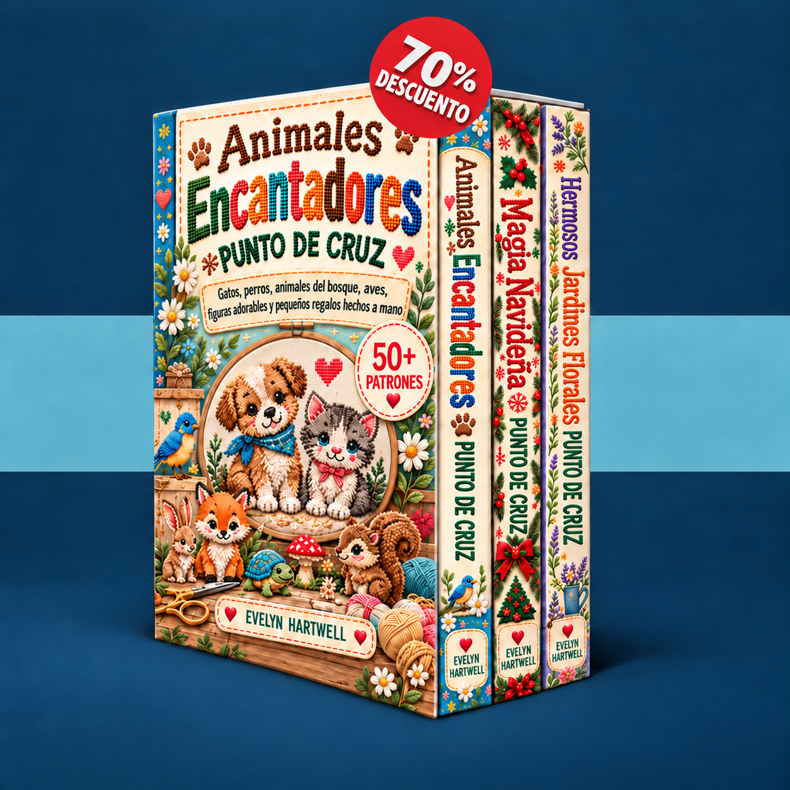

Elige un motivo pequeño, aprende a leer el patrón y borda tu primer proyecto paso a paso.
Cargando tus patrones…
Activa JavaScript para usar el área de miembros o abre los manuales directamente con los enlaces de abajo.
Enviar un correo